Catalogue : vérification des photos (39 plats, généré depuis backend/src/Resto.Api/Data/catalogue.json)
1. Pizza
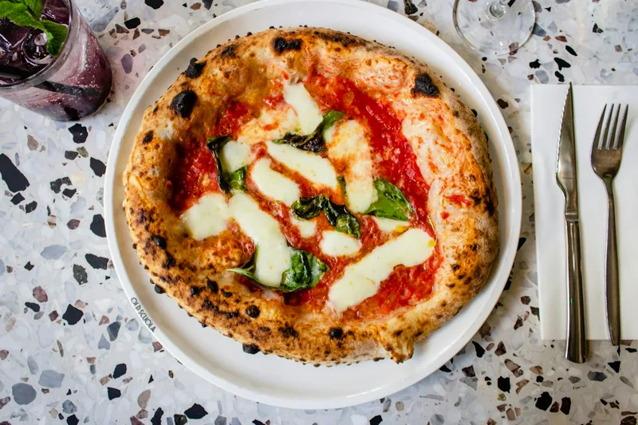
1. Pizza Margherita — 9 DT
/images/menu/pizza-margherita.webp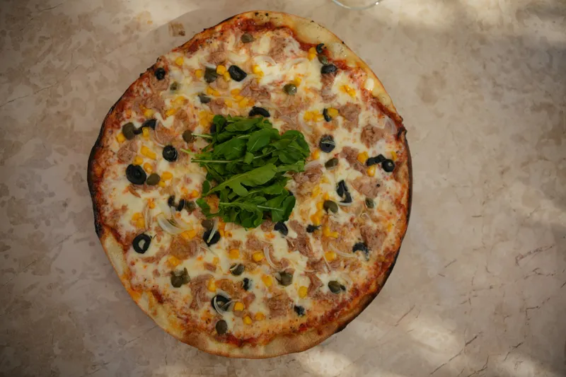
2. Pizza thon-olives — 12 DT
/images/menu/pizza-thon-olives.webp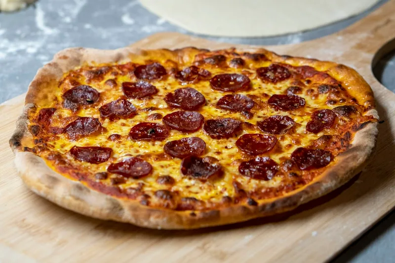
3. Pizza pepperoni — 13 DT
/images/menu/pizza-pepperoni.webp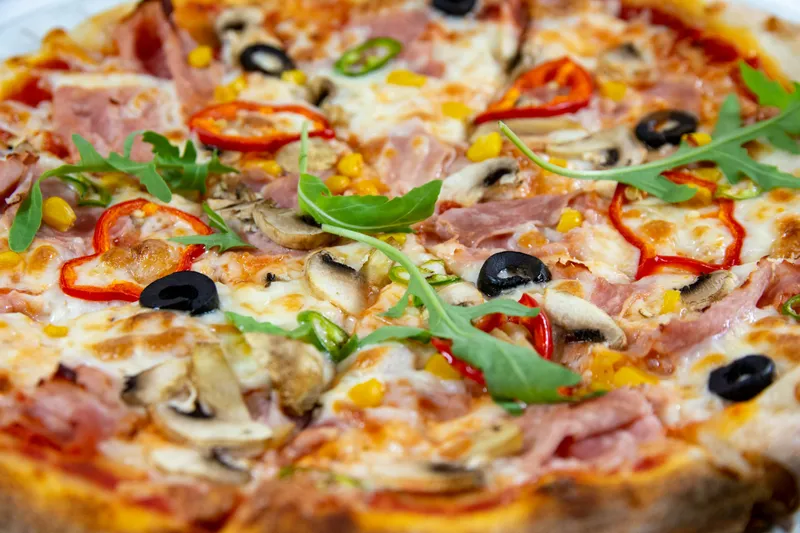
4. Pizza 4 saisons — 13.5 DT
/images/menu/pizza-4-saisons.webp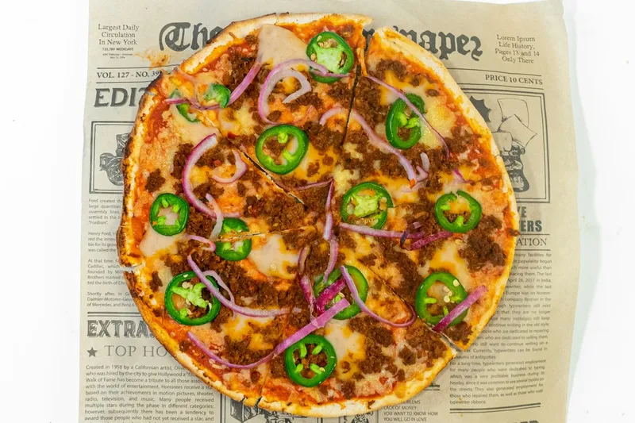
5. Pizza mexicaine — 13.5 DT
/images/menu/pizza-mexicaine.webp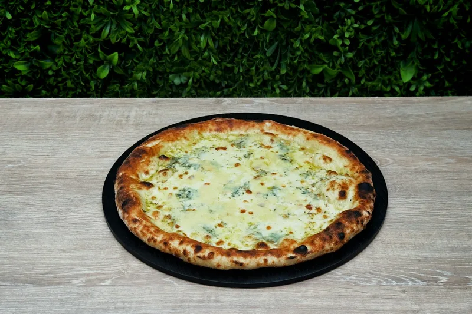
6. Pizza 4 fromages — 14 DT
/images/menu/pizza-4-fromages.webp2. Plats
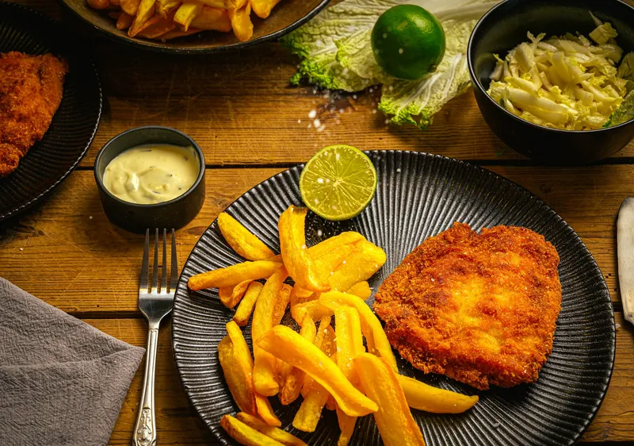
1. Escalope panée — 13 DT
/images/menu/escalope-panee.webp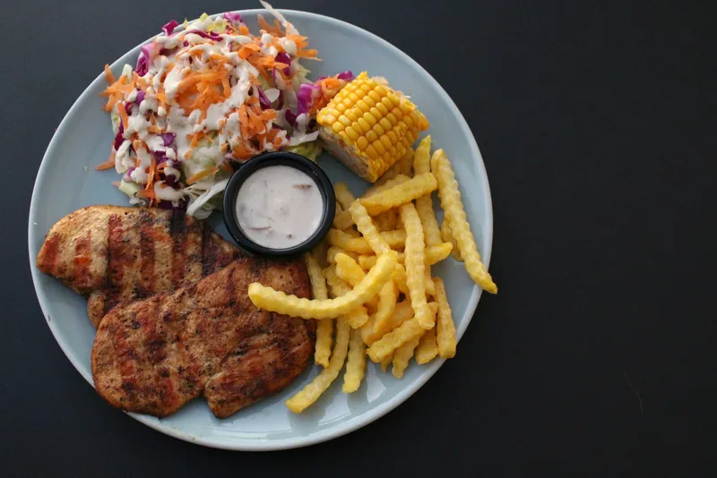
2. Poulet grillé — 14 DT
/images/menu/poulet-grille.webp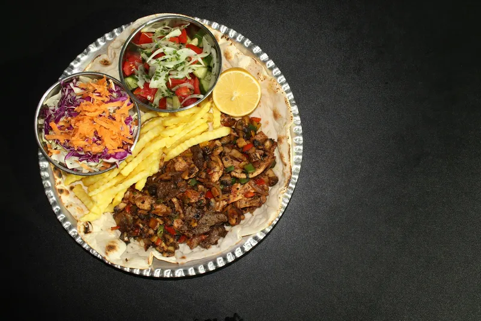
3. Assiette chawarma — 14 DT
/images/menu/assiette-chawarma.webp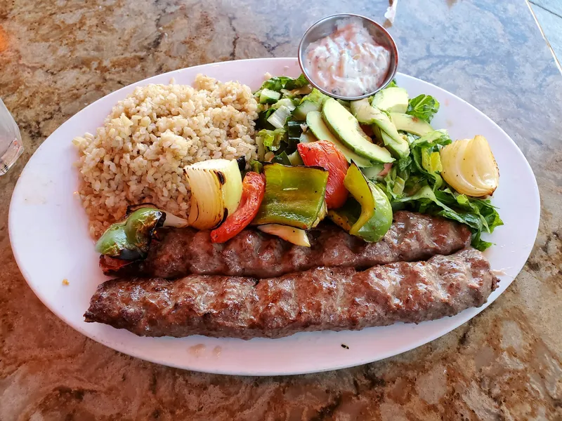
4. Kebab — 14 DT
/images/menu/kebab.webp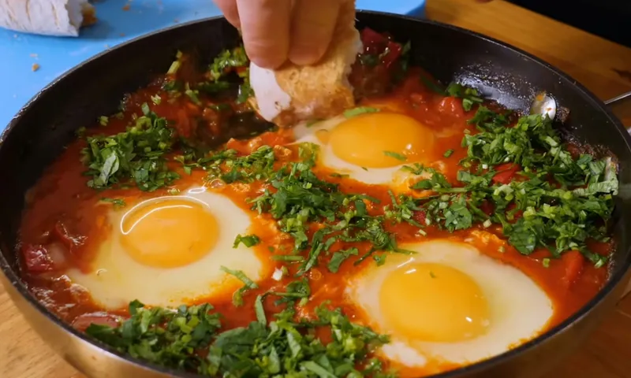
5. Ojja merguez — 12 DT
/images/menu/ojja-merguez.webp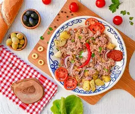
6. Sahn tounsi — 15 DT
/images/menu/sahn-tounsi.webp3. Sandwich
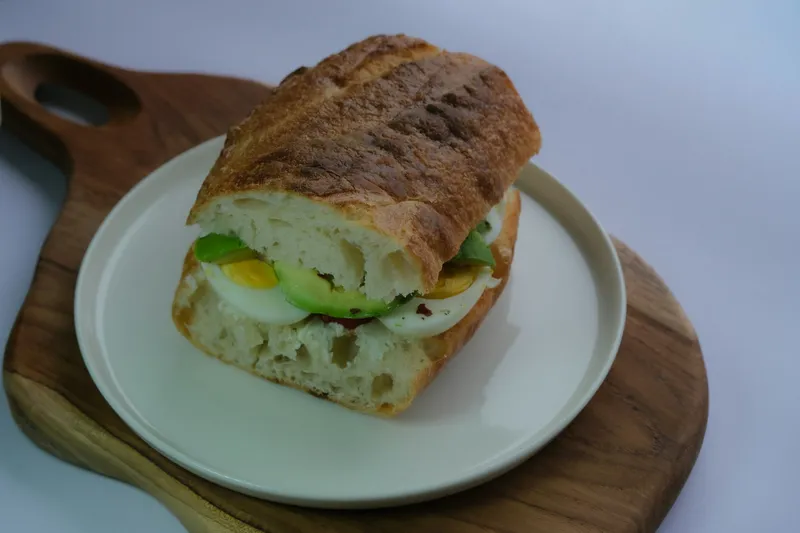
1. Sandwich œuf — 3.5 DT
/images/menu/sandwich-oeuf.webpaucune image
2. Sandwich Kwika — 4.5 DT
null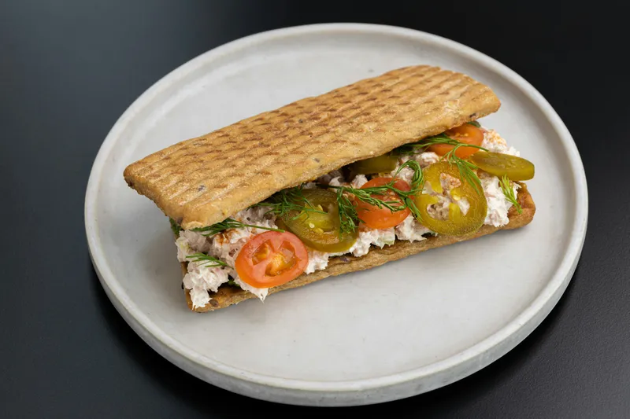
3. Sandwich thon — 5 DT
/images/menu/sandwich-thon.webpaucune image
4. Sandwich œuf + Kwika — 5.5 DT
nullaucune image
5. Sandwich merguez — 7 DT
null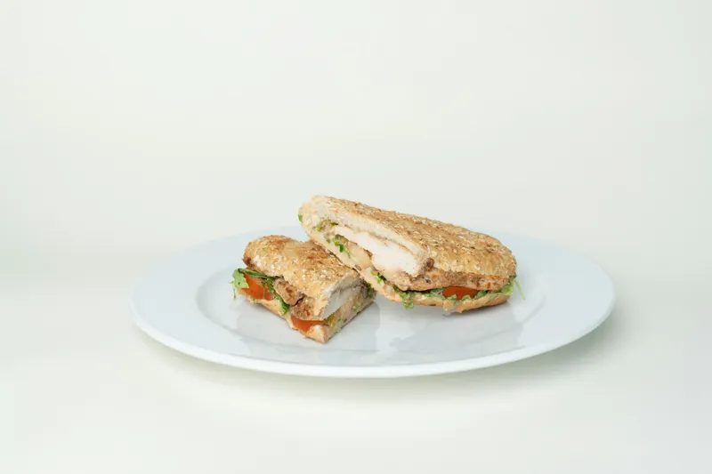
6. Sandwich escalope — 8 DT
/images/menu/sandwich-escalope.webp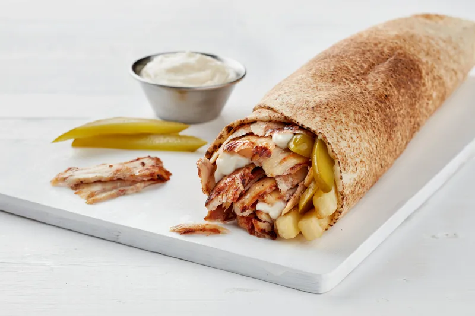
7. Sandwich chawarma — 8.5 DT
/images/menu/sandwich-chawarma.webp4. Makloub
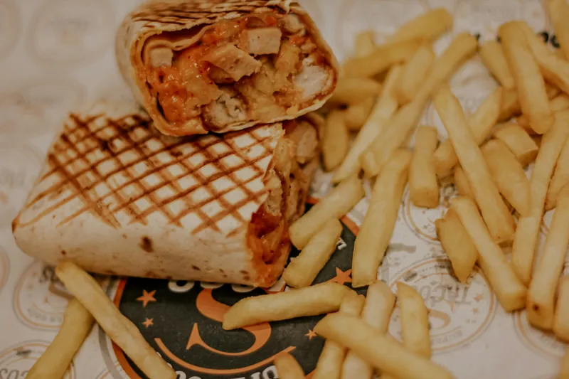
1. Makloub poulet — 9.5 DT
/images/menu/makloub-poulet.webp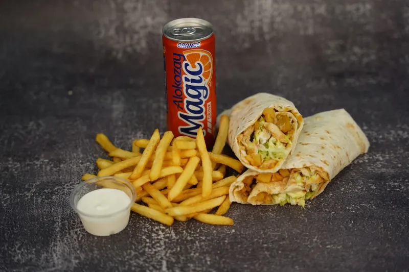
2. Makloub escalope — 10 DT
/images/menu/makloub-escalope.webpaucune image
3. Makloub cordon bleu — 10.5 DT
null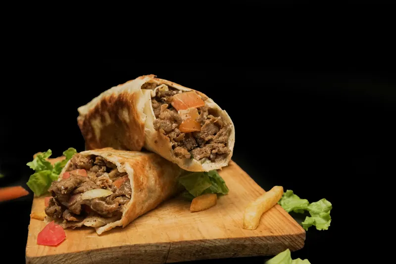
4. Makloub viande hachée — 10 DT
/images/menu/makloub-viande-hachee.webpaucune image
5. Makloub thon — 8 DT
null5. Baguettes farcies
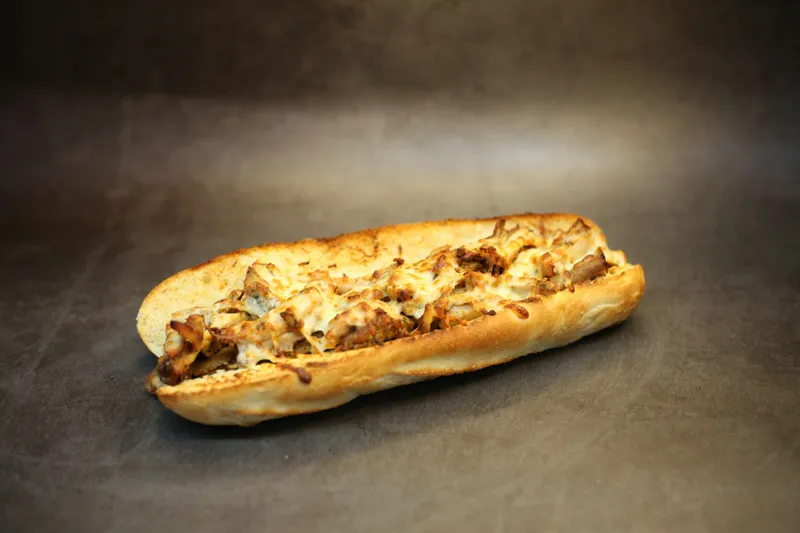
1. Baguette farcie poulet — 9 DT
/images/menu/baguette-farcie-poulet.webpaucune image
2. Baguette farcie escalope — 9.5 DT
nullaucune image
3. Baguette farcie viande hachée — 9.5 DT
nullaucune image
4. Baguette farcie cordon bleu — 10 DT
nullaucune image
5. Baguette farcie thon — 8 DT
null6. Tabouna
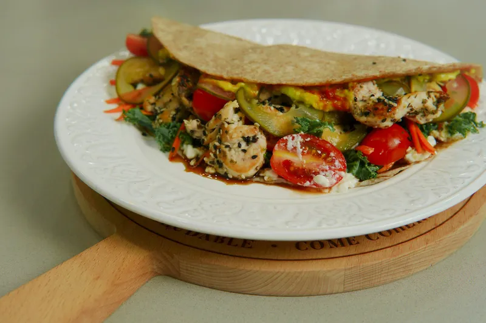
1. Tabouna poulet — 8.5 DT
/images/menu/tabouna-poulet.webpaucune image
2. Tabouna escalope — 9 DT
nullaucune image
3. Tabouna cordon bleu — 9.5 DT
nullaucune image
4. Tabouna viande hachée — 9 DT
nullaucune image
5. Tabouna thon — 7.5 DT
null9. Boissons
1. Jus d'orange pressé — 5 DT
/images/menu/jus-orange-presse.webp2. Citronnade — 4 DT
/images/menu/citronnade.webp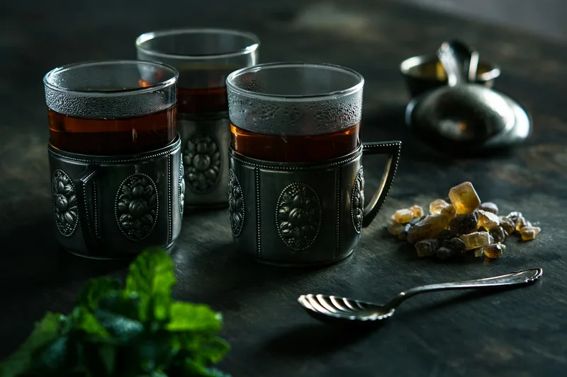
3. Thé à la menthe — 2.5 DT
/images/menu/the-a-la-menthe.webp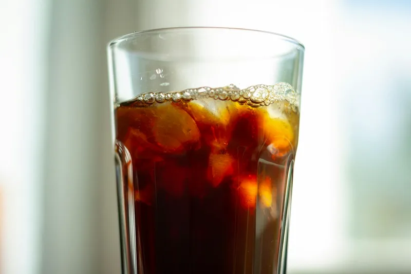
4. Boisson gazeuse — 3 DT
/images/menu/boisson-gazeuse.webp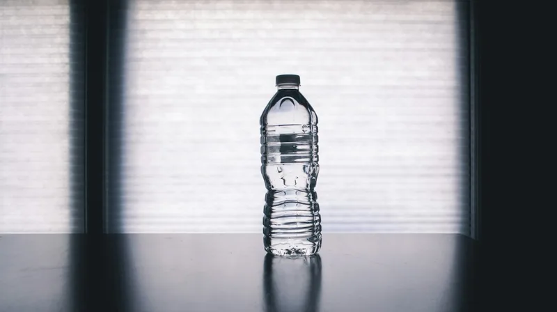
5. Eau minérale 0,5 L — 1.5 DT
/images/menu/eau-minerale.webpCatégories encore vides : Cornet, Lablabi.